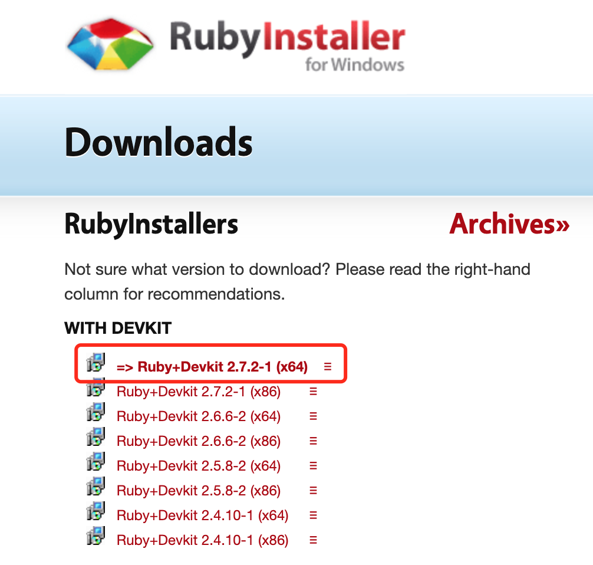
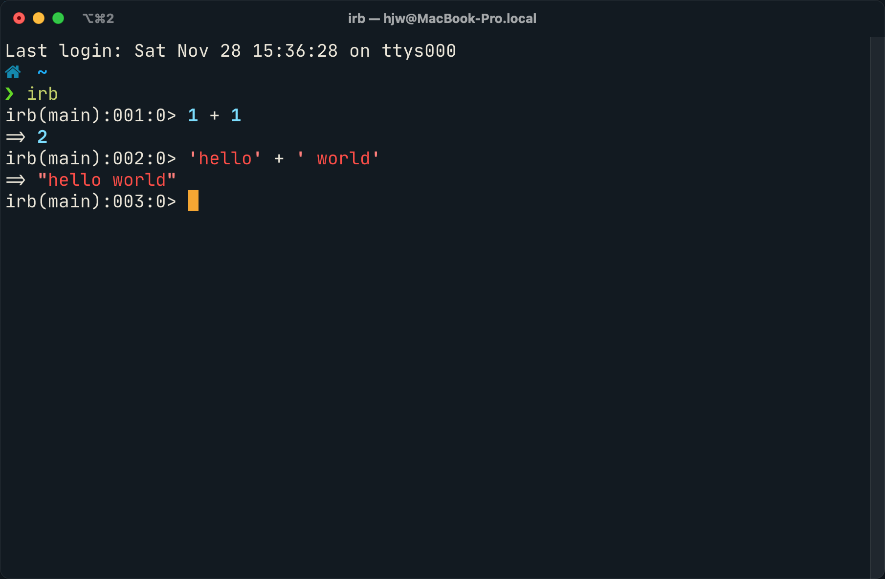
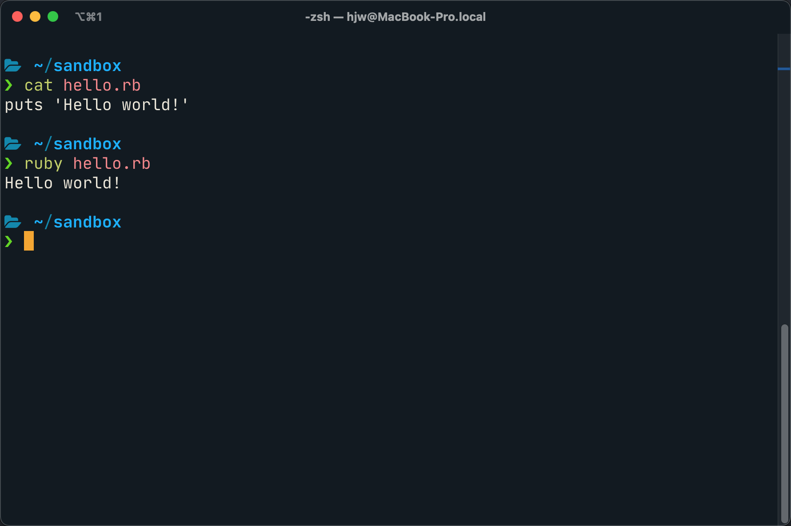

Ruby编程语言

“I hope to see Ruby help every programmer in the world to be productive, and to enjoy programming, and to be happy. That is the primary purpose of Ruby language.”
Yukihiro Matsumoto
安装
https://www.ruby-lang.org/en/downloads/
REPL
运行
基本语法
注释
# This is a comment
=begin
This is a multi-line comment.
The beginning line must start with "=begin"
and the ending line must start with "=end".
You can do this, or start each line in
a multi-line comment with the # character.
=end
算术运算
1 + 1 #=> 2
8 - 1 #=> 7
10 * 2 #=> 20
35 / 5 #=> 7
2 ** 5 #=> 32
5 % 3 #=> 2
# Bitwise operators
3 & 5 #=> 1
3 | 5 #=> 7
3 ^ 5 #=> 6
字符串
# String interpolation
placeholder = 'use string interpolation'
"I can #{placeholder} when using double quoted strings"
#=> "I can use string interpolation when using double quoted strings"
# You can combine strings using `+`, but not with other types
'hello ' + 'world' #=> "hello world"
'hello ' + 3 #=> TypeError: can't convert Fixnum into String
'hello ' + 3.to_s #=> "hello 3"
"hello #{3}" #=> "hello 3"
# ...or combine strings and operators
'hello ' * 3 #=> "hello hello hello "
# ...or append to string
'hello' << ' world' #=> "hello world"
# You can print to the output with a newline at the end
puts "I'm printing!"
#=> I'm printing!
#=> nil
# ...or print to the output without a newline
print "I'm printing!"
#=> "I'm printing!" => nil
逻辑运算
nil # equivalent to null in other languages
true # truth
false # falsehood
# Equality
1 == 1 #=> true
2 == 1 #=> false
# Inequality
1 != 1 #=> false
2 != 1 #=> true
# Apart from false itself, nil is the only other 'falsey' value
!!nil #=> false
!!false #=> false
!!0 #=> true
!!"" #=> true
# More comparisons
1 < 10 #=> true
1 > 10 #=> false
2 <= 2 #=> true
2 >= 2 #=> true
# Combined comparison operator (returns `1` when the first argument is greater,
# `-1` when the second argument is greater, and `0` otherwise)
1 <=> 10 #=> -1 (1 < 10)
10 <=> 1 #=> 1 (10 > 1)
1 <=> 1 #=> 0 (1 == 1)
# Logical operators
true && false #=> false
true || false #=> true
# There are alternate versions of the logical operators with much lower
# precedence. These are meant to be used as flow-control constructs to chain
# statements together until one of them returns true or false.
# `do_something_else` only called if `do_something` succeeds.
do_something() and do_something_else()
# `log_error` only called if `do_something` fails.
do_something() or log_error()
变量
x = 25 #=> 25
x #=> 25
# Note that assignment returns the value assigned.
# This means you can do multiple assignment.
x = y = 10 #=> 10
x #=> 10
y #=> 10
# By convention, use snake_case for variable names.
snake_case = true
# Use descriptive variable names
path_to_project_root = '/good/name/'
m = '/bad/name/'
# Symbols are immutable, reusable constants represented internally by an
# integer value. They're often used instead of strings to efficiently convey
# specific, meaningful values.
:pending.class #=> Symbol
status = :pending
status == :pending #=> true
status == 'pending' #=> false
status == :approved #=> false
# Strings can be converted into symbols and vice versa.
status.to_s #=> "pending"
"argon".to_sym #=> :argon
数组
# This is an array.
array = [1, 2, 3, 4, 5] #=> [1, 2, 3, 4, 5]
# Arrays can contain different types of items.
[1, 'hello', false] #=> [1, "hello", false]
# You might prefer %w instead of quotes
%w[foo bar baz] #=> ["foo", "bar", "baz"]
# Arrays can be indexed.
# From the front...
array[0] #=> 1
array.first #=> 1
array[12] #=> nil
# ...or from the back...
array[-1] #=> 5
array.last #=> 5
# ...or with a start index and length...
array[2, 3] #=> [3, 4, 5]
# ...or with a range...
array[1..3] #=> [2, 3, 4]
# You can reverse an Array.
# Return a new array with reversed values
[1,2,3].reverse #=> [3,2,1]
# Reverse an array in place to update variable with reversed values
a = [1,2,3]
a.reverse! #=> a==[3,2,1] because of the bang ('!') call to reverse
# Like arithmetic, [var] access is just syntactic sugar
# for calling a method '[]' on an object.
array.[] 0 #=> 1
array.[] 12 #=> nil
# You can add to an array...
array << 6 #=> [1, 2, 3, 4, 5, 6]
# Or like this
array.push(6) #=> [1, 2, 3, 4, 5, 6]
# ...and check if an item exists in an array
array.include?(1) #=> true
哈希
# Hashes are Ruby's primary dictionary with key/value pairs.
# Hashes are denoted with curly braces.
hash = { 'color' => 'green', 'number' => 5 }
hash.keys #=> ['color', 'number']
# Hashes can be quickly looked up by key.
hash['color'] #=> "green"
hash['number'] #=> 5
# Asking a hash for a key that doesn't exist returns nil.
hash['nothing here'] #=> nil
# When using symbols for keys in a hash, you can use an alternate syntax.
hash = { :defcon => 3, :action => true }
hash.keys #=> [:defcon, :action]
hash = { defcon: 3, action: true }
hash.keys #=> [:defcon, :action]
# Check existence of keys and values in hash
hash.key?(:defcon) #=> true
hash.value?(3) #=> true
条件语句
if true
'if statement'
elsif false
'else if, optional'
else
'else, also optional'
end
# If a condition controls invocation of a single statement rather than a block of code
# you can use postfix-if notation
warnings = ['Patronimic is missing', 'Address too short']
puts("Some warnings occurred:\n" + warnings.join("\n")) if !warnings.empty?
# Rephrase condition if `unless` sounds better than `if`
puts("Some warnings occurred:\n" + warnings.join("\n")) unless warnings.empty?
Case
# Case construct
grade = 'B'
case grade
when 'A'
puts 'Way to go kiddo'
when 'B'
puts 'Better luck next time'
when 'C'
puts 'You can do better'
when 'D'
puts 'Scraping through'
when 'F'
puts 'You failed!'
else
puts 'Alternative grading system, eh?'
end
#=> "Better luck next time"
# Cases can also use ranges
grade = 82
case grade
when 90..100
puts 'Hooray!'
when 80...90
puts 'OK job'
else
puts 'You failed!'
end
#=> "OK job"
循环
# In Ruby, traditional `for` loops aren't very common. Instead, these
# basic loops are implemented using enumerable, which hinges on `each`.
(1..5).each do |counter|
puts "iteration #{counter}"
end
# Which is roughly equivalent to the following, which is unusual to see in Ruby.
for counter in 1..5
puts "iteration #{counter}"
end
# The `do |variable| ... end` construct above is called a 'block'. Blocks are similar
# to lambdas, anonymous functions or closures in other programming languages. They can
# be passed around as objects, called, or attached as methods.
#
# The 'each' method of a range runs the block once for each element of the range.
# The block is passed a counter as a parameter.
# You can also surround blocks in curly brackets.
(1..5).each { |counter| puts "iteration #{counter}" }
# The contents of data structures can also be iterated using each.
array.each do |element|
puts "#{element} is part of the array"
end
hash.each do |key, value|
puts "#{key} is #{value}"
end
# If you still need an index you can use 'each_with_index' and define an index
# variable.
array.each_with_index do |element, index|
puts "#{element} is number #{index} in the array"
end
counter = 1
while counter <= 5 do
puts "iteration #{counter}"
counter += 1
end
#=> iteration 1
#=> iteration 2
#=> iteration 3
#=> iteration 4
#=> iteration 5
# There are a bunch of other helpful looping functions in Ruby.
# For example: 'map', 'reduce', 'inject', the list goes on.
# Map, for instance, takes the array it's looping over, does something
# to it as defined in your block, and returns an entirely new array.
array = [1,2,3,4,5]
doubled = array.map do |element|
element * 2
end
puts doubled
#=> [2,4,6,8,10]
puts array
#=> [1,2,3,4,5]
# another useful syntax is .map(&:method)
a = ["FOO", "BAR", "BAZ"]
a.map { |s| s.downcase } #=> ["foo", "bar", "baz"]
a.map(&:downcase) #=> ["foo", "bar", "baz"]
函数(方法)
def double(x)
x * 2
end
# Methods (and blocks) implicitly return the value of the last statement.
double(2) #=> 4
# Parentheses are optional where the interpretation is unambiguous.
double 3 #=> 6
double double 3 #=> 12
def sum(x, y)
x + y
end
# Method arguments are separated by a comma.
sum 3, 4 #=> 7
sum sum(3, 4), 5 #=> 12
# yield
# All methods have an implicit, optional block parameter.
# It can be called with the 'yield' keyword.
def surround
puts '{'
yield
puts '}'
end
surround { puts 'hello world' }
#=> {
#=> hello world
#=> }
面向对象
一切皆为对象
3.class #=> Integer
"Hello".class #=> String
"Hello".method(:class).class #=> Method
nil.class #=> NilClass
true.class #=> TrueClass
false.class #=> FalseClass
:pending.class #=> Symbol
# Arithmetic is just syntactic sugar
# for calling a method on an object
1.+(3) #=> 4
10.* 5 #=> 50
100.methods.include?(:/) #=> true
5.even? #=> false
5.odd? #=> true
定义类、对象
class Human
# A class variable. It is shared by all instances of this class.
@@species = 'H. sapiens'
# Basic initializer
def initialize(name, age = 0)
# Assign the argument to the 'name' instance variable for the instance.
@name = name
# If no age given, we will fall back to the default in the arguments list.
@age = age
end
# Basic setter method
def name=(name)
@name = name
end
# Basic getter method
def name
@name
end
# The above functionality can be encapsulated using the attr_accessor method as follows.
attr_accessor :name
# Getter/setter methods can also be created individually like this.
attr_reader :name
attr_writer :name
# A class method uses self to distinguish from instance methods.
# It can only be called on the class, not an instance.
def self.say(msg)
puts msg
end
def species
@@species
end
end
# Instantiating of a class
jim = Human.new('Jim Halpert')
dwight = Human.new('Dwight K. Schrute')
# You can call the methods of the generated object.
jim.species #=> "H. sapiens"
jim.name #=> "Jim Halpert"
jim.name = "Jim Halpert II" #=> "Jim Halpert II"
jim.name #=> "Jim Halpert II"
dwight.species #=> "H. sapiens"
dwight.name #=> "Dwight K. Schrute"
# Calling of a class method
Human.say('Hi') #=> "Hi"
类的继承
# Base class
class Human
@@foo = 0
@bar = 0
def self.foo
@@foo
end
def self.foo=(value)
@@foo = value
end
def self.bar
@bar
end
def self.bar=(value)
@bar = value
end
end
# Derived class
class Worker < Human
end
Human.foo #=> 0
Worker.foo #=> 0
Human.foo = 2
Worker.foo #=> 2
Human.bar #=> 0
Worker.bar #=> nil
鸭子类型(Duck Typing)
class Duck
def quack
'Quack!'
end
def swim
'Paddle paddle paddle...'
end
end
class Goose
def honk
'Honk!'
end
def swim
'Splash splash splash...'
end
end
class DuckRecording
def quack
play
end
def play
'Quack!'
end
end
def make_it_quack(duck)
duck.quack
end
puts make_it_quack(Duck.new)
puts make_it_quack(DuckRecording.new)
def make_it_swim(duck)
duck.swim
end
puts make_it_swim(Duck.new)
puts make_it_swim(Goose.new)